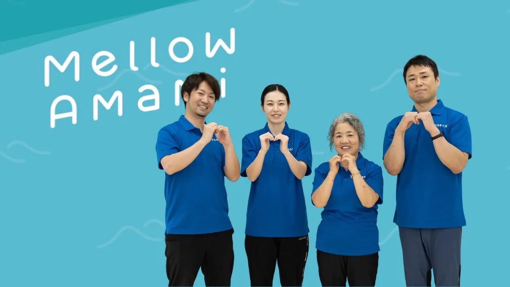
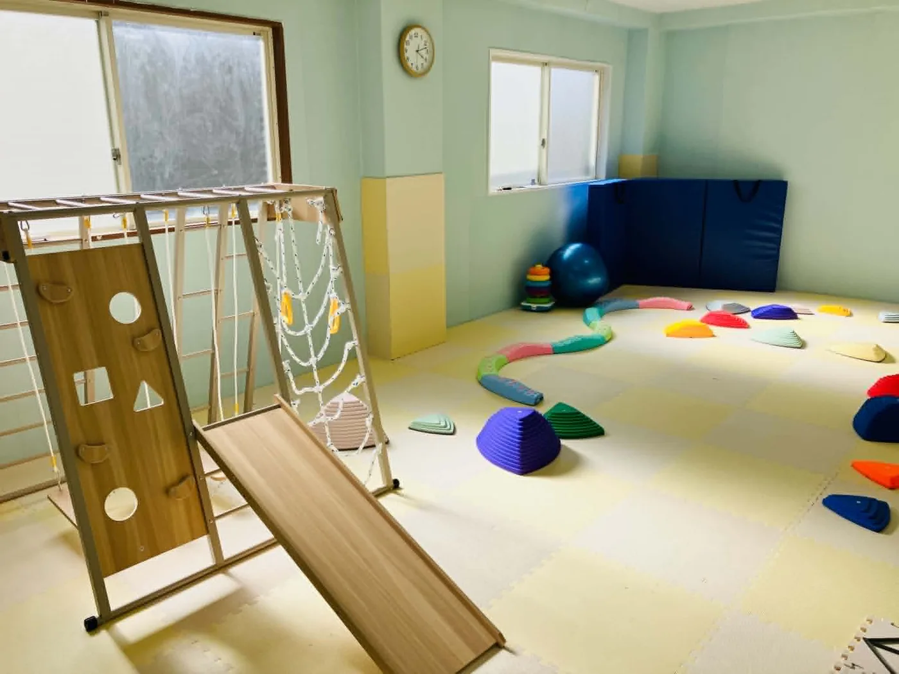
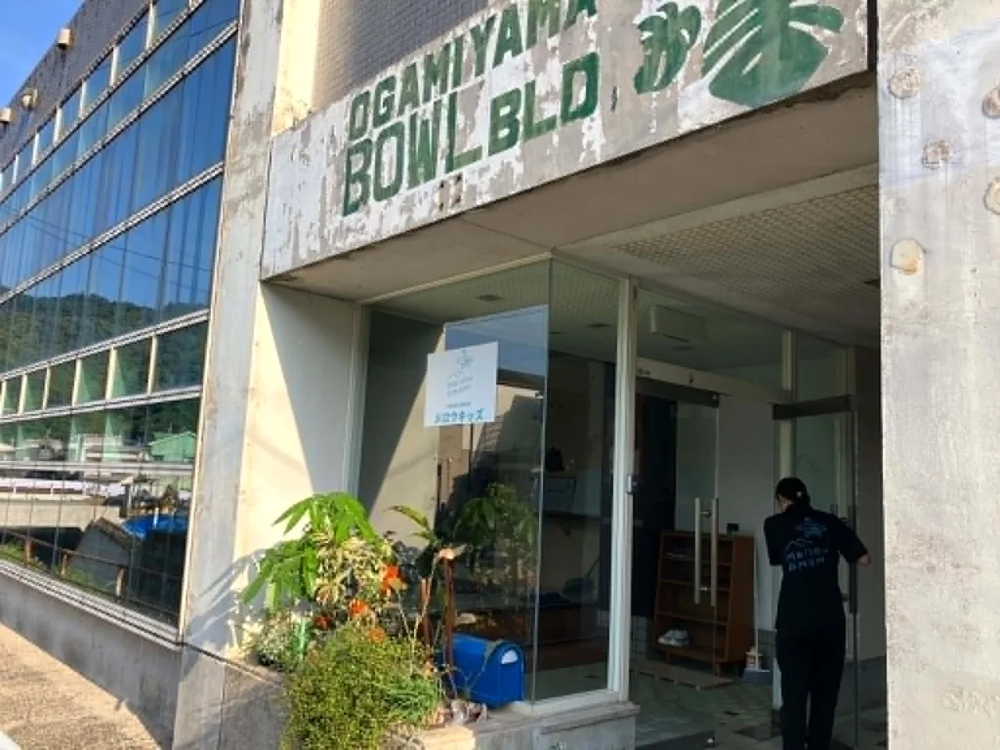
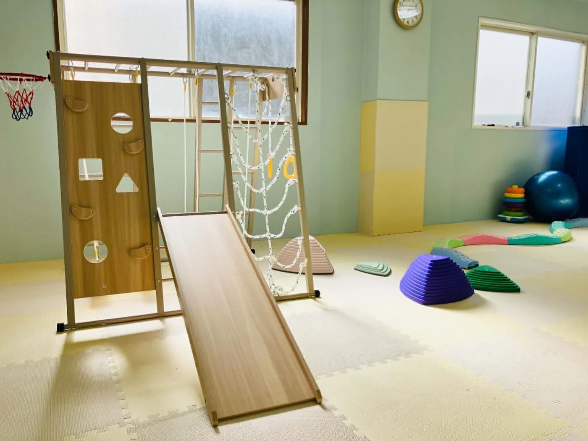
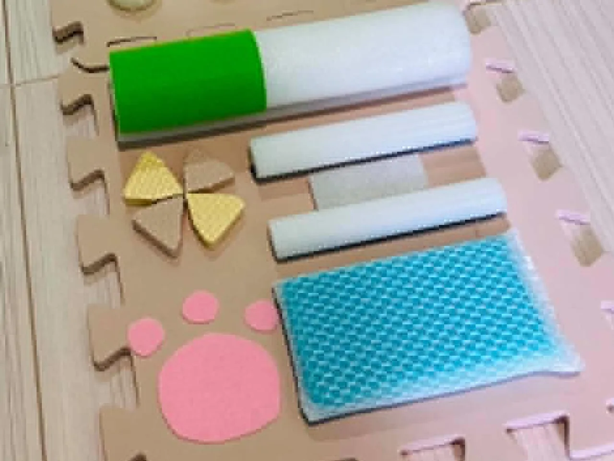

Strength
作業療法士をはじめとした
作業療法士をはじめとした
専門職集団です。
大学院の修士課程で作業療法や心理学、対人コミュニケーションを研究してきた児童発達支援管理責任者を中心にプログラムを組み、それぞれの専門性を活かして子ども・ご家族と関わります。
作業療法士 2名公認心理師 1名ピラティスインストラクター 1名保育士 1名教員 1名介護福祉士 2名

Education
スタッフ教育
スタッフの質を担保するため、社内在籍のキャリアコンサルタントが社員教育システムを設計して運用します。
ピラティスインストラクターと共に、スタッフ自身が率先して身体づくりに励みます。
Facility
施設・設備
利用シーンに合わせた2つの訓練室。落ち着いてじっくり課題に取り組むも良し、全身を使ってダイナミックに動き回るも良し。




Equipment
主な設備
個別訓練室（ナミノリの部屋）小集団訓練室（すみっこの部屋）事務所・相談室
感覚統合スイングジャングルジムお勉強コーナー（書籍・絵本）
感覚遊びグッズ施設紹介コーナー




← よこにスクロールしてご覧いただけます →